Tracked
| Classname | Full Name | Image | Armor | Max. Seats | Cargo Seats | Gunners | Commander |
| M1Abrams | M1A1 [USMC] | 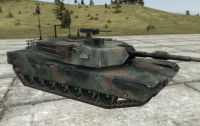 | 850 | 3 | 0 | 1 | Y |
| M1A2_TUSK_MG | M1A2 TUSK [USMC] | ||||||
| AAV | AAVP7A1 [USMC] | 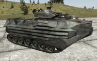 | 210 | 22 | 19 | 1 | Y |
| T72_CDF | T-72 [CDF] | 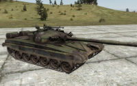 | 690 | 3 | 0 | 1 | Y |
| T72_INS | T-72 [ChDKZ] | ||||||
| T72_RU | T-72 [Russia] | ||||||
| T72_Gue | T-72 [NAPA] | ||||||
| T90 | T-90 [Russia] | 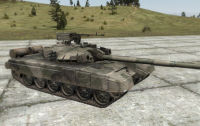 | 800 | 3 | 0 | 1 | Y |
| BMP2_CDF | BMP-2 [CDF] | 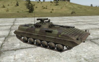 | 250 | 10 | 7 | 1 | Y |
| BMP2_INS | BMP-2 [ChDKZ] | ||||||
| BMP2_Ambul_CDF | BMP-2 [CDF] | 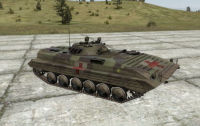 | 250 | 4 | 3 | 1 | Y |
| BMP2_Ambul_INS | BMP-2 [ChDKZ] | ||||||
| BMP2_HQ_CDF | BMP-2 (HQ) [CDF] | 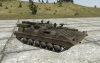 | 250 | 2 | 0 | 0 | N |
| BMP2_HQ_INS | BMP-2 (HQ) [ChDKZ] | ||||||
| BMP3 | BMP-3 [Russia] | 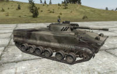 | 300 | 10 | 7 | 1 | Y |
| ZSU_CDF | ZSU-23 Shilka [CDF] | 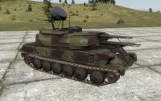 | 160 | 3 | 0 | 1 | Y |
| ZSU_INS | ZSU-23 Shilka [ChDKZ] | ||||||
| 2S6M_Tunguska | 2S6M Tunguska [Russia] | 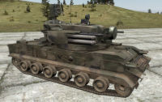 | 160 | 3 | 0 | 1 | Y |
| MLRS | M270 MLRS [USMC] | 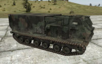 | 160 | 3 | 0 | 1 | Y |
| T34 | T-34 [NAPA] | 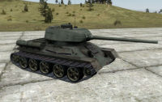 | 300 | 3 | 0 | 1 | Y |
{kind=link}
{kind=link}
{kind=link}
{kind=link}
{kind=link}
{kind=link}
{kind=link}
{kind=link}
{kind=link}
{kind=link}
{kind=link}
{kind=link}
Wheeled
| Classname | Full Name | Image | Armor | Max. Seats | Cargo Seats | Gunners |
| HMMWV | HMMWV | 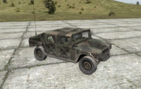 | 70 | 4 | 3 | 0 |
| HMMWV_Ambulance | HMMWV (Ambulance) | 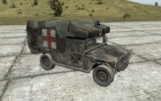 | 70 | 6 | 5 | 0 |
| HMMWV_TOW | HMMWV (TOW) | 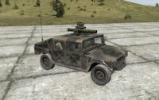 | 70 | 4 | 3 | 1 |
| HMMWV_MK19 | HMMWV (Mk19) | 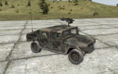 | 70 | 4 | 3 | 1 |
| HMMWV_Armored | HMMWV (M240) | 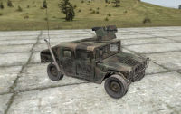 | 70 | 5 | 3 | 1 |
| HMMWV_Avenger | HMMWV Avenger | 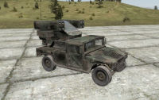 | 70 | 3 | 1 | 1 |
| HMMWV_M2 | HMMWV (M2) | 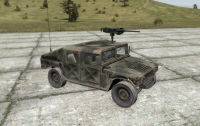 | 70 | 5 | 3 | 1 |
| UAZ_CDF | UAZ [CDF] | 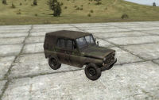 | 20 | 4 | 3 | 0 |
| UAZ_INS | UAZ [ChDKZ] | |||||
| UAZ_RU | UAZ [Russia] | |||||
| UAZ_AGS30_CDF | UAZ (AGS-30) [CDF] | 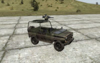 | 20 | 3 | 1 | 1 |
| UAZ_AGS30_INS | UAZ (AGS-30) [ChDKZ] | |||||
| UAZ_AGS30_RU | UAZ (AGS-30) [Russia] | |||||
| UAZ_MG_CDF | UAZ (DShKM) [CDF] | 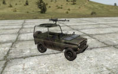 | 20 | 3 | 1 | 1 |
| UAZ_MG_INS | UAZ (DShKM) [ChDKZ] | |||||
| UAZ_SPG9_INS | UAZ (SPG-9) [ChDKZ] | 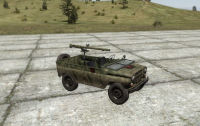 | 20 | 3 | 1 | 1 |
| MTVR | MTVR | 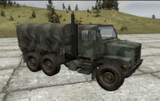 | 20 | 13 | 12 | 0 |
| MtvrReammo | MTVR (Ammo) | 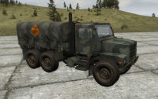 | 20 | 13 | 12 | 0 |
| MtvrRepair | MTVR (Repair) | 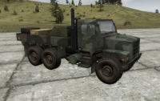 | 20 | 13 | 12 | 0 |
| MtvrRefuel | MTVR (Fuel) | 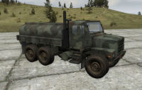 | 20 | 13 | 12 | 0 |
| Ural_CDF | Ural [CDF] | 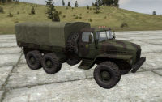 | 20 | 15 | 14 | 0 |
| UralOpen_INS | Ural [ChDKZ] | |||||
| Ural_CDF | Ural Civil | |||||
| UralOpen_CDF | Ural (Open) [CDF] |  |
20 | 15 | 14 | 0 |
| UralOpen_CDF | Ural (Open) [ChDKZ] | |||||
| UralOpen_CDF | Ural Civil 2 | |||||
| UralReammo_CDF | Ural (Ammunition) [CDF] | 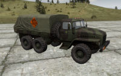 | 20 | 3 | 2 | 0 |
| UralReammo_INS | Ural (Ammunition) [ChDKZ] | |||||
| UralRefuel_CDF | Ural (Fuel) [CDF] | 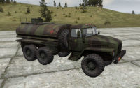 | 20 | 3 | 2 | 0 |
| UralRefuel_INS | Ural (Fuel) [ChDKZ] | |||||
| UralRepair_CDF | Ural (Repair) [CDF] | 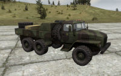 | 20 | 3 | 2 | 0 |
| UralRepair_INS | Ural (Repair) [ChDKZ] | |||||
| Ural_ZU23_CDF | Ural (ZU-23) [CDF] | 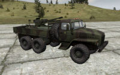 | 20 | 3 | 2 | 0 |
| Ural_ZU23_INS | Ural (ZU-23) [ChDKZ] | |||||
| Ural_ZU23_GUE | Ural (ZU-23) [NAPA] | |||||
| GRAD_CDF | BM21 GRAD [CDF] | 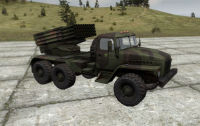 | 20 | 3 | 2 | 0 |
| GRAD_INS | BM21 GRAD [ChDKZ] | |||||
| GRAD_RU | BM21 GRAD [Russia] | |||||
| Kamaz | Utility Truck | 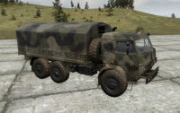 | 20 | 13 | 12 | 0 |
| KamazOpen | Utility Truck (Open) | 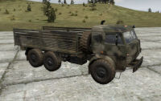 | 20 | 13 | 12 | 0 |
| KamazRepair | Utility Truck (Repair) | 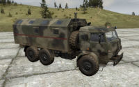 | 20 | 13 | 12 | 0 |
| KamazRefuel | Utility Truck (Fuel) | 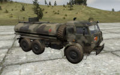 | 20 | 13 | 12 | 0 |
| KamazReammo | Utility Truck (Ammunition) | 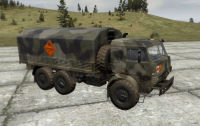 | 20 | 13 | 12 | 0 |
| V3S_GUE | V3S [NAPA] | 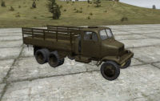 | 20 | 4 | 3 | 0 |
| V3S_Civ | V3S (Civil) | |||||
| BRDM2_ATGM_CDF | BRDM-2 ATGM [CDF] | 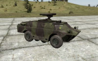 | 120 | 2 | 0 | 1 |
| BRDM2_ATGM_INS | BRDM-2 ATGM [ChDKZ] | |||||
| BRDM2_CDF | BRDM-2 [CDF] | 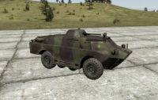 | 120 | 5 | 3 | 1 |
| BRDM2_INS | BRDM-2 [ChDKZ] | |||||
| BRDM2_GUE | BRDM-2 [NAPA] | |||||
| BRDM2_HQ_Gue | BRDM-2 (HQ) [CDF] | 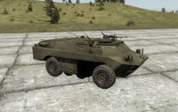 | 120 | 2 | 0 | 1 |
| BTR90 | BTR-90 [Russia] |  |
150 | 2 | 0 | 1 |
| BTR90_HQ | BTR-90 (HQ) [Russia] | 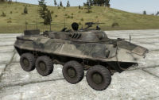 | 150 | 2 | 0 | 1 |
| LAV25 | LAV-25 [USMC] | 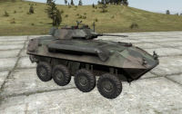 | 150 | 9 | 6 | 1 |
| LAV25_HQ | LAV-25 (HQ) [USMC] | 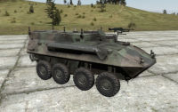 | 150 | 9 | 6 | 1 |
| GAZ_Vodnik | Vodnik (2xPK) [Russia] | 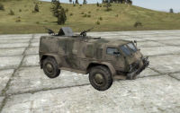 | 100 | 13 | 12 | 1 |
| GAZ_Vodnik_HMG | Vodnik (BPPU) [Russia] | 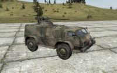 | 100 | 13 | 12 | 1 |
| GAZ_Vodnik_MedEvac | Vodnik (Ambulance) [Russia] | 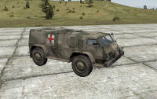 | 100 | 13 | 12 | 1 |
| Offroad_DSHKM_Gue | Offroad (DShKM) [NAPA] | 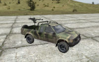 | 20 | 3 | 1 | 1 |
| Offroad_SPG9_Gue | Offroad (SPG9) [NAPA] | |||||
| Offroad_DSHKM_Ins | Offroad (DShKM) [ChDKZ] | |||||
| Pickup_PK_GUE | Pickup (PK) [NAPA] | 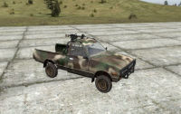 | 20 | 3 | 1 | 1 |
| Pickup_PK_INS | Pickup (PK) [ChDKZ] | |||||
| SkodaBlue | Car (Blue) | 20 | 4 | 3 | 0 | |
| Skoda | Car (White) | |||||
| SkodaGreen | Car (Green) | |||||
| SkodaRed | Car (Red) | |||||
| VWGolf | Hatchback | 20 | 4 | 3 | 0 | |
| car_hatchback | Old hatchback | 20 | 4 | 3 | 0 | |
| car_sedan | Sedan | 20 | 4 | 3 | 0 | |
| Lada1 | VAZ (Red) | 20 | 4 | 3 | 0 | |
| Lada2 | VAZ (white) | |||||
| LadaLM | VAZ (militia) | 20 | 4 | 3 | 0 | |
| datsun1_civil_1_open | Pick-Up | 20 | 2 | 1 | 0 | |
| datsun1_civil_2_covered | Pick-Up (Covered) | |||||
| datsun1_civil_3_open | Pick-Up (Tube frame) | |||||
| hilux1_civil_1_open | Offroad (tan) | 20 | 2 | 1 | 0 | |
| hilux1_civil_2_covered | Offroad (red) | |||||
| hilux1_civil_3_open | Offroad (white) | |||||
| Ikarus | Bus |  |
20 | 24 | 23 | 0 |
| MMT_Civ | Mountain bike |  |
15 | 1 | 0 | 0 |
| MMT_USMC | Mountain bike [USMC] | |||||
| M1030 | Motorcycle | 50 | 1 | 0 | 0 | |
| TT650_Civ | Motorcycle | 50 | 1 | 0 | 0 | |
| TT650_Ins | Motorcycle [ChDKZ] | |||||
| TT650_Gue | Motorcycle [NAPA] | |||||
| TowingTractor | Towing Tractor | 20 | 1 | 0 | 0 | |
| tractor | Tractor | 20 | 1 | 0 | 0 |
{kind=link}
{kind=link}
{kind=link}
{kind=link}
{kind=link}
{kind=link}
{kind=link}
{kind=link}
{kind=link}
{kind=link}
{kind=link}
{kind=link}
{kind=link}
{kind=link}
{kind=link}
{kind=link}
{kind=link}
{kind=link}
{kind=link}
{kind=link}
{kind=link}
{kind=link}
{kind=link}
{kind=link}
{kind=link}
{kind=link}
{kind=link}
{kind=link}
{kind=link}
{kind=link}
{kind=link}
{kind=link}
{kind=link}
{kind=link}
{kind=link}
{kind=link}
{kind=link}
{kind=link}
{kind=link}
{kind=link}
{kind=link}
{kind=link}
{kind=link}
{kind=link}
{kind=link}
{kind=link}
{kind=link}
{kind=link}
{kind=link}
{kind=link}
Air
| Classname | Full Name | Image | Armor | Max. Seats | Cargo Seats | Gunners |
| AH1Z | AH-1Z [USMC] | 60 | 1 | 0 | 1 | |
| A10 | A-10 [USMC] | 75 | 1 | 0 | 0 | |
| AH64D | AH-64D [USMC] | 60 | 2 | 0 | 1 | |
| MH60S | MH-60S [USMC] | 35 | 15 | 12 | 2 | |
| F35B | F-35B [USMC] | 40 | 1 | 0 | 0 | |
| AV8B | AV-8B [USMC] | 40 | 1 | 0 | 0 | |
| AV8B2 | AV-8B (GBU) [USMC] | |||||
| Mi17_CDF | Mi-17 [CDF] | 25 | 18 | 16 | 1 | |
| Mi17_INS | Mi-8MT [ChDKZ] | |||||
| Mi17_medevac_CDF | Mi-17-IVA Medevac [CDF] | |||||
| Mi17_medevac_Ins | Mi-17-IVA Medevac [ChDKZ] | |||||
| Mi17_medevac_RU | Mi-17-IVA Medevac [Russia] | |||||
| Mi17_rockets_RU | Mi-8MTV-3 [Russia] | 25 | 18 | 16 | 1 | |
| Mi17_Civilian | Mi-17 (Civilian) | 25 | 17 | 16 | 0 | |
| Mi24_D | Mi-24D [CDF] | 33 | 10 | 1 | 1 | |
| Mi24_P | Mi-24P [Russia] | |||||
| Mi24_V | Mi-24V [Russia] | |||||
| Ka52 | Ka-52 | 65 | 2 | 0 | 1 | |
| Ka52Black | Ka-52 (Black) | |||||
| Su25_CDF | Su-25 [Russia] | 75 | 1 | 0 | 0 | |
| Su25_INS | Su-25 [ChDKZ] | |||||
| Su39 | Su-39 [Russia] | |||||
| Su34 | Su-34 [Russia] | 60 | 1 | 0 | 0 | |
| UH1Y | UH-1Y [USMC] | 30 | 9 | 6 | 2 | |
| C130J | C-130J [USMC] | 70 | 26 | 25 | 0 | |
| MV22 | MV-22 [USMC] | 25 | 25 | 24 | 0 | |
| MQ9PredatorB | MQ-9 [USMC] | 10 | 2 | 0 | 0 | |
| Pchela1T | Pchela-1T [Russia] |  |
10 | 1 | 0 | 0 |
| Chukar | BQM-74 [USMC] | 10 | 1 | 0 | 0 | |
| CruiseMissile1 | Cruise Missile [USMC] |  |
0 | 1 | 0 | 0 |
| CruiseMissile2 | Cruise Missile 2 [USMC] | |||||
| BIS_Steerable_Parachute | Steerable parachute | 0 | 1 | 0 | 0 | |
| ParachuteBigEast | Cargo parachute (Large) [Russia] | |||||
| ParachuteBigWest | Cargo parachute (Large) [USMC] | |||||
| ParachuteC | Parachute | |||||
| ParachuteEast | Parachute [Russia] | |||||
| ParachuteWest | Parachute [USMC] | |||||
| ParachuteG | Parachute [NAPA] | |||||
| ParachuteMediumEast | Cargo parachute [Russia] | |||||
| ParachuteMediumWest | Parachute [USMC] |
{kind=link}
{kind=link}
{kind=link}
{kind=link}
{kind=link}
{kind=link}
{kind=link}
{kind=link}
{kind=link}
{kind=link}
{kind=link}
{kind=link}
{kind=link}
{kind=link}
{kind=link}
{kind=link}
{kind=link}
{kind=link}
{kind=link}
Water
| Classname | Full Name | Image | armor | Max. Seats | Cargo Seats | Gunners |
| Fishing_Boat | Fishing Boat | 20 | 8 | 7 | 0 | |
| PBX | PBX | 20 | 4 | 3 | 0 | |
| RHIB | RHIB | 20 | 12 | 10 | 1 | |
| RHIB2Turret | RHIB (Mk19) | |||||
| SeaFox | Water target | 20 | 1 | 0 | 0 | |
| Smallboat_1 | Small boat | 20 | 6 | 5 | 0 | |
| Smallboat_2 | Small boat II | |||||
| Zodiac | CRRC | 20 | 5 | 4 | 0 |
{kind=link}
{kind=link}
{kind=link}
{kind=link}
{kind=link}
{kind=link}